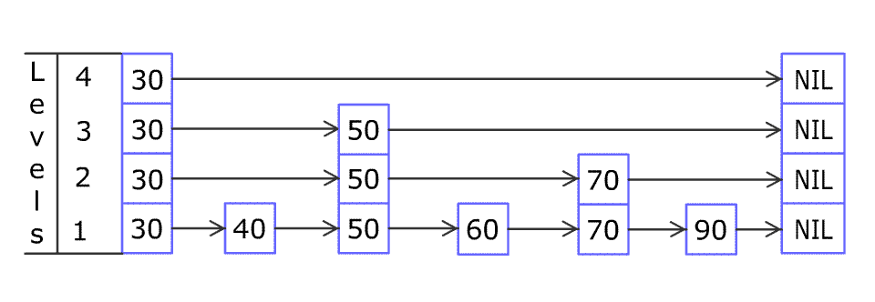

1206. 设计跳表
多层链表：底层放全量、上层是稀疏快车道；查找从顶层往下走，每层走到最后一个小于目标的结点再下一层；层高掷硬币决定。
思路
- 每个结点带一个
next[]数组：next[i]是它在第i层的下一个结点；层高由「50% 概率再上一层」随机出来。 - 查找：从当前最高层出发，每层沿
next[i]走到最后一个< target的结点，再下降一层；底层看next[0]是否等于目标。 add：先像查找一样沿途把每层的前驱记进update[]，新结点随机层高h，在0..h-1每层做普通链表插入；h超过当前最高层时前驱都是head。erase：同样先记update[]；update[0].next[0]不等于目标就是不存在，返回false；否则在它出现的每一层摘掉（条件update[i].next[i] == t），再把空了的顶层收缩掉。
图解
最优解
1class Skiplist {2 private static final int MAX_LEVEL = 32; // 层数上限，足够覆盖 5e4 次操作3 4 private static class Node {5 int val;6 Node[] next = new Node[MAX_LEVEL]; // next[i]：本结点在第 i 层的下一个结点7 8 Node(int val) { this.val = val; }9 }10 11 private final Node head = new Node(-1); // 哨兵头，第 0~31 层的起点12 private int level = 1; // 当前实际用到的最高层数13 14 public Skiplist() {15 16 }17 18 // 从顶层往下找：每层走到最后一个 < num 的结点，沿途记进 update19 private Node[] find(int num) {20 Node[] update = new Node[MAX_LEVEL];21 Node p = head;22 for (int i = level - 1; i >= 0; i--) {23 while (p.next[i] != null && p.next[i].val < num) p = p.next[i];24 update[i] = p;25 }26 return update;27 }28 29 public boolean search(int target) {30 Node p = head;31 for (int i = level - 1; i >= 0; i--) {32 while (p.next[i] != null && p.next[i].val < target) p = p.next[i];33 }34 Node t = p.next[0];35 return t != null && t.val == target;36 }37 38 public void add(int num) {39 Node[] update = find(num);40 Node node = new Node(num);41 int h = randomLevel();42 // 新层没有前驱，前驱都是 head43 for (int i = level; i < h; i++) update[i] = head;44 if (h > level) level = h;45 for (int i = 0; i < h; i++) {46 node.next[i] = update[i].next[i];47 update[i].next[i] = node;48 }49 }50 51 private int randomLevel() {52 int h = 1;53 while (h < MAX_LEVEL && Math.random() < 0.5) h++; // 每层 50% 概率再长一层54 return h;55 }56 57 public boolean erase(int num) {58 Node[] update = find(num);59 Node t = update[0].next[0];60 if (t == null || t.val != num) return false;61 // 在 t 出现的每一层把它摘掉（update[i].next[i] == t 说明该层连着它）62 for (int i = 0; i < level && update[i].next[i] == t; i++) update[i].next[i] = t.next[i];63 while (level > 1 && head.next[level - 1] == null) level--; // 顶层空了就收缩64 return true;65 }66}67 68/**69 * Your Skiplist object will be instantiated and called as such:70 * Skiplist obj = new Skiplist();71 * boolean param_1 = obj.search(target);72 * obj.add(num);73 * boolean param_3 = obj.erase(num);74 */题目
不使用任何库函数，设计一个 跳表 。
跳表 是在 O(log(n)) 时间内完成增加、删除、搜索操作的数据结构。跳表相比于树堆与红黑树，其功能与性能相当，并且跳表的代码长度相较下更短，其设计思想与链表相似。
例如，一个跳表包含 [30, 40, 50, 60, 70, 90] ，然后增加 80、45 到跳表中，以下图的方式操作：

跳表中有很多层，每一层是一个短的链表。在第一层的作用下，增加、删除和搜索操作的时间复杂度不超过 O(n)。跳表的每一个操作的平均时间复杂度是 O(log(n))，空间复杂度是 O(n)。
了解更多 : https://oi-wiki.org/ds/skiplist/
在本题中，你的设计应该要包含这些函数：
bool search(int target): 返回target是否存在于跳表中。void add(int num): 插入一个元素到跳表。bool erase(int num): 在跳表中删除一个值，如果num不存在，直接返回false. 如果存在多个num，删除其中任意一个即可。
注意，跳表中可能存在多个相同的值，你的代码需要处理这种情况。
示例 1:
输入 ["Skiplist", "add", "add", "add", "search", "add", "search", "erase", "erase", "search"] [[], [1], [2], [3], [0], [4], [1], [0], [1], [1]] 输出 [null, null, null, null, false, null, true, false, true, false] 解释 Skiplist skiplist = new Skiplist(); skiplist.add(1); skiplist.add(2); skiplist.add(3); skiplist.search(0); // 返回 false skiplist.add(4); skiplist.search(1); // 返回 true skiplist.erase(0); // 返回 false，0 不在跳表中 skiplist.erase(1); // 返回 true skiplist.search(1); // 返回 false，1 已被擦除
提示:
0 <= num, target <= 2 * 104- 调用
search,add,erase操作次数不大于5 * 104
题面取自力扣当前版本。
数据快照 2026-11-04。题面版权归力扣所有，本站点仅供本人学习使用，请勿对外发布。